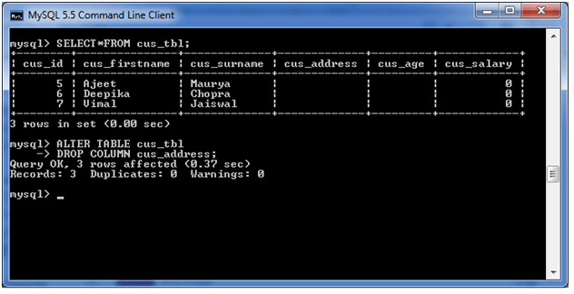

PL/SQL is a procedural language designed specifically for the Oracle Database management system. It combines the flexibility of SQL with the procedural capabilities of programming languages. PL/SQL is used to create stored procedures, functions, triggers, and other database objects that can be reused and shared across multiple applications. This makes PL/SQL a popular choice for developing complex database applications.
• DECLARE
declaration statements;
• BEGIN
executable statements
• EXCEPTIONS
exception handling statements
• END;
• Declare section starts with DECLARE keyword in which variables, constants,
records as cursors can be declared which stores data temporarily. It basically
consists definition of PL/SQL identifiers. This part of the code is optional.
• Execution section starts with BEGIN and ends with END keyword.This is a
mandatory section and here the program logic is written to perform any task like
loops and conditional statements. It supports all DML commands, DDL commands
and SQL*PLUS built-in functions as well.
• Exception section starts with EXCEPTION keyword.This section is optional which
contains statements that are executed when a run-time error occurs. Any
exceptions can be handled in this section.
